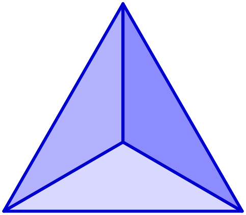
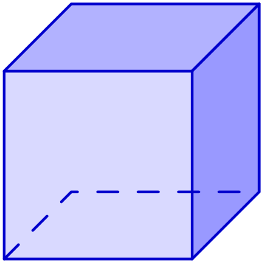
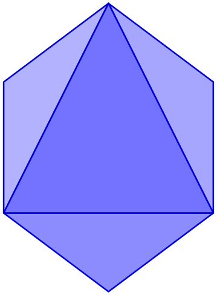
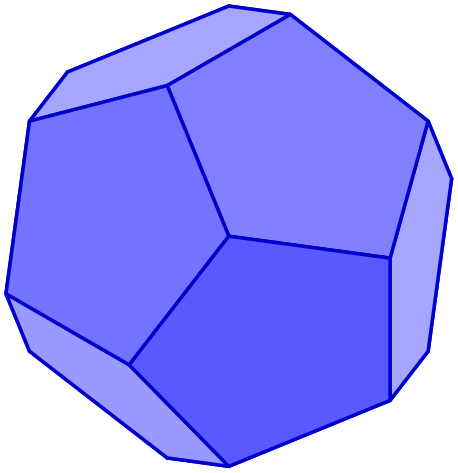
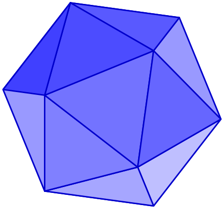

Apartado 13.2
Poliedros regulares
Los poliedros regulares, también llamados sólidos platónicos, son aquellos cuyas caras son polígonos regulares congruentes y en cada vértice concurre el mismo número de caras. Solo existen cinco:

Tetraedro
4 caras triangulares

Cubo
6 caras cuadradas

Octaedro
8 caras triáng.

Dodecaedro
12 caras pentag.

Icosaedro
20 caras triáng.
Todos cumplen la fórmula de Euler y son los únicos poliedros convexos perfectamente regulares que existen.
13.2.1
Comprueba la fórmula de Euler en el tetraedro, el octaedro y el icosaedro.